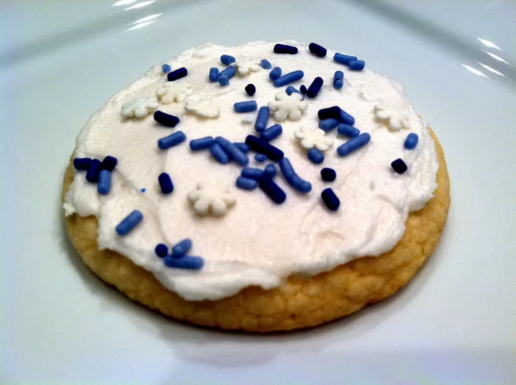

Sugar Cookie Frosting

Description
Every baker needs a good sugar cookie frosting in their repertoire. This simple, top-rated sugar cookie frosting
recipe
will quickly become your new go-to!
Ingredients
- Shortening: This sugar cookie frosting starts with shortening instead of butter. Why? Shortening creates
frosting that
firms up nicely and is unlikely to melt, which means it's perfect for stacking cookies.
- Confectioners' sugar: Confectioners' sugar (a.k.a. powdered sugar or icing sugar) is the next ingredient. Don't
substitute granulated sugar, as it's not fine enough.
- Milk: A few tablespoons of milk thins the frosting, making it perfectly spreadable.
- Vanilla: A teaspoon of vanilla extract enhances the flavor of the sugar cookie frosting. You can substitute
almond
extract, if desired.
- Food coloring (optional): If you need your frosting to be a specific color, use food coloring to create the
perfect hue.
Steps
- Beat the shortening until creamy.
- Gradually beat in the sugar and milk in small amounts, alternating until smooth.
- Add vanilla and continue beating until the frosting is stiff and glossy.
- Stir in the food coloring, if desired.